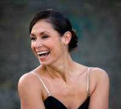
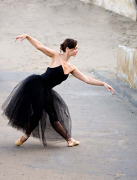
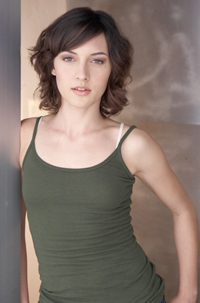
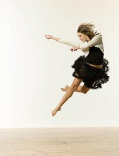

|
|
Ms. Laura Padierne Wexler (Director/Founder/Instructor) Founded NVDS in 2006. She has been teaching Ballet, Jazz and Modern dance to children and adults for 16 years. Her dance career started in Miami, Fl. In 2001, she graduated from the University of Florida, Gainesville with a Bachelor of Fine Arts. While at UF she had the opportunity to study, and perform, with ODC/San Francisco, Les Ballet Africains, Dance Brazil, Dance Alive!, and Garth Fagan Dance. Laura has been awarded several scholarships, which have allowed her to further her dance education at prestigious programs and schools throughout the United States. These include: American Dance Festival, the Boston Ballet, Pacific Northwest Ballet, ODC/San Francisco (UF), and New World School of the Arts.
Laura has worked and performed with several companies and choreographers across the bay area and in South Florida. She appeared as a dancer in the movie RENT (based on the Broadway show), directed by Christopher Columbus. Her choreography has been chosen for presentation at the Kennedy Center. Beyond the studio, she has her certification in Dance Healing from Shands Hospital in Gainesville, FL, where she worked as an artist in residence.
Miss Laura P Wexler is also currently a member of the Visual and Performing Arts Department at Sacred Heart Cathedral Prep, High School where she also teaches dance
|
 |
|
Hailing from Johannesburg, South Africa, Nicole Bridgens has been teaching, performing and creating new works throughout California and South Africa. Nicole received her B.A. in Dance from California State University, Long Beach. While there, her choreography was chosen to represent CSULB at the American College Dance Festival, and later commissioned to be re-stage for Utah Valley University. Nicole participated in the Choreographic Residency program at San Francisco Conservatory of Dance and has also studied in Tel Aviv, Israel with Batsheva Dance Company. Her work has been shown in New York at the Young Choreographers Festival, in San Francisco at West Wave Dance Festivals "3 or More" concert and at The Garage as part of their Resident Artist Workshop (RAW).
Nicole joined NVDS in 2009.
|
|  |
|
A bay area native, Samantha Beach Clark began her training under Damara Bennett and Henry Berg while spending summer’s training at American Ballet Theater (ABT). She began her professional career dancing with the Oakland Ballet and Northern Ballet Theater. In 2004, Miss Samantha moved to New York where she danced for the innovative Cedar Lake Ensemble , the Metropolitan Opera Ballet, and Nejila Yakin/Dance to name a few. She has taught in San Francisco, New York and Connecticut. Samantha is excited to be living back in San Francisco and joining the staff at Noe Valley Dance Space. |